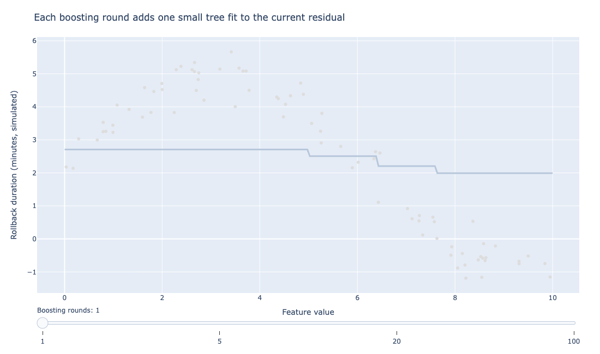
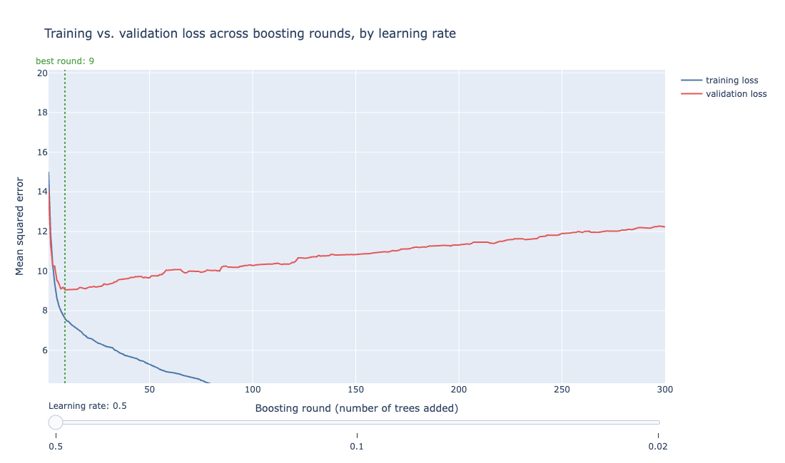
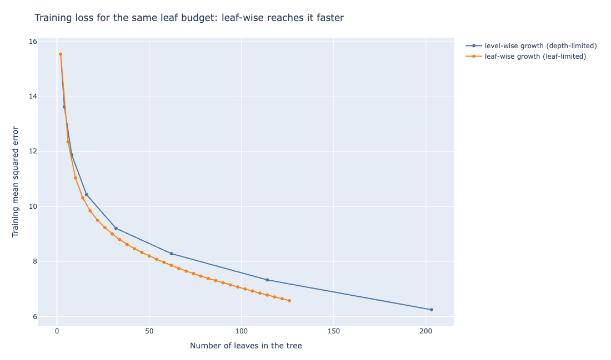
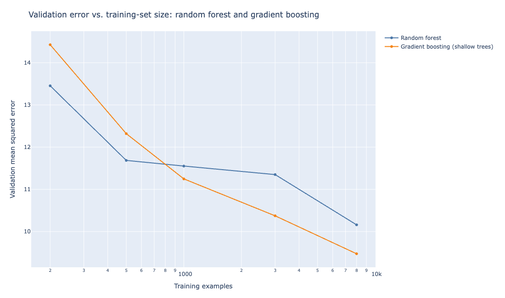
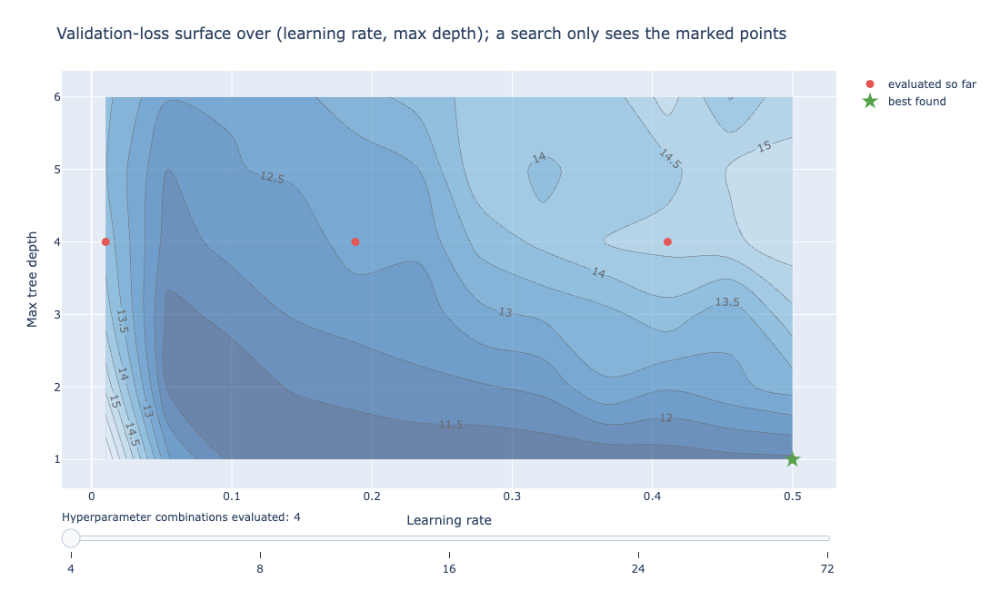

8 Gradient Boosting: XGBoost and LightGBM
A random forest builds hundreds of trees independently and averages them, and that averaging is what keeps its variance low. Boosting throws that independence away on purpose: each tree in a boosted ensemble is built to correct the mistakes of the trees that came before it, in sequence.
The result routinely wins the tabular-data leaderboard that random forests used to dominate. The trade-off is concrete: a boosted model takes more care to tune than a random forest, and it can overfit in a way bagging structurally cannot.
This chapter covers what that sequential correction does, and the two implementations, XGBoost and LightGBM, that turned gradient boosting from a slow research idea into the default choice for structured data in production.
Recall the rollback-risk scenario from the previous chapter: predicting whether a deployment will need to be rolled back from payload size, canary error rate, dependency count, and time of day. The random forest chapter used it to show bagging and variable importance. This chapter uses the same scenario to show what sequential, error-correcting trees add on top.
8.1 Boosting versus bagging
A random forest reduces variance by averaging many trees that were each fit independently, on a bootstrap resample of the same data. Each tree, left alone, might overfit badly; averaging cancels out the noise each individual tree picked up.
Boosting works on a different axis entirely. It starts from a weak model (often just a constant, the mean of the target), computes where that model is wrong, and fits a small new tree specifically to those errors. It then adds the new tree’s predictions to the running total, computes the new errors, fits another tree to those, and repeats.
Where a random forest’s trees are grown in parallel and know nothing about each other, a boosted model’s trees are grown in strict sequence, and every tree after the first exists only because of what the ones before it got wrong.
A random forest’s trees can train on separate cores or machines at the same time because none depends on another. A boosted model cannot: tree ten needs tree nine’s finished output before it can start, so training time scales with tree count in a way bagging’s does not.
Think of a hiker walking downhill in fog: she cannot see the bottom, but she can feel which direction slopes down the most right where she stands, and takes a step that way. The negative gradient is just that felt direction, pointing toward less error.
Friedman formalized this as gradient boosting: at each step, the next tree is fit not to the raw errors but to the negative gradient of the loss function with respect to the current predictions (Friedman 2001).
For squared-error loss, the negative gradient is just the residual (the true value minus the predicted value), so “fit a tree to the residuals” is gradient boosting’s simplest case.
For other loss functions, such as the log-loss used for a probability like rollback risk, the negative gradient works out to a different quantity: the true outcome (0 or 1) minus the predicted probability, the same “true value minus prediction” shape as the squared-error case above, just measured on a probability scale.
The tree is fit to how far off that predicted probability was, not just whether the prediction crossed a decision threshold. The mechanism stays the same across loss functions: each tree is a small step in the direction that most reduces the loss.

Figure 8.1 makes the sequential mechanism visible rather than described. After a single round, the model is one shallow tree, barely better than predicting the average every time.
Each additional round fits a new tree to whatever the current running total still gets wrong. By round 100, the accumulated sum of a hundred small corrections traces the underlying curve the individual trees could never see on their own.
8.2 Shrinkage and the learning-rate trade-off
Adding each new tree’s full prediction to the running total would let the model chase the training data too aggressively. In practice, every gradient boosting implementation multiplies each new tree’s contribution by a learning rate (also called shrinkage), typically a small number like 0.01 to 0.3, before adding it in.
A smaller learning rate means each tree contributes less, so more trees are needed to reach the same fit, but the resulting ensemble generalizes better because no single tree is allowed to overcorrect.

Figure 8.2 trains a gradient boosting model on the rollback-risk data at three learning rates and tracks both training and validation loss as more trees are added.
At a high learning rate, training loss drops fast and validation loss follows it down, then turns back up: the model has started fitting noise specific to the training set. At a low learning rate, both curves descend more slowly, and the point where validation loss stops improving arrives much later, in exchange for a lower validation loss at that point.
The number of trees and the learning rate are not independent choices; they trade off directly, the kind of joint tuning problem Chapter 5’s cross-validation techniques exist to solve.
Rather than guess a fixed tree count, most production boosting pipelines set the learning rate, train with a large tree budget, and use a validation set to stop adding trees the moment validation loss stops improving. That stopping point, marked on the chart above, is early stopping, and it is the single most important tuning decision in gradient boosting.
If only one hyperparameter gets tuned carefully, make it early stopping. A learning rate that is merely reasonable, paired with early stopping, usually beats a perfectly tuned learning rate with a fixed, guessed tree count.
8.3 Tree depth as a regularizer
A random forest’s individual trees are typically grown deep, close to their maximum possible depth, because bagging’s averaging step is what controls variance, not the individual tree’s simplicity. A boosted model works the opposite way.
Because each tree only has to nudge the ensemble a small step in the right direction, boosted trees are kept shallow on purpose, often just two to six levels deep (sometimes called stumps at depth one).
A shallow tree can only model a limited amount of structure, and that limitation is a form of regularization: it prevents any single tree from memorizing idiosyncrasies of its training data, leaving the learning rate and tree count to control the ensemble’s overall complexity instead.
Depth means opposite things in the two families covered so far: grow forest trees deep and let averaging clean up the noise, but keep boosted trees shallow so no single tree overcorrects. Carrying a random forest’s deep-tree habit into a boosted model is a common tuning mistake.
8.4 XGBoost: a regularized, second-order boosting system
XGBoost, introduced by Chen and Guestrin in 2016, is not simply a fast implementation of Friedman’s gradient boosting; it changes what each tree is optimizing for (Chen and Guestrin 2016). Two changes account for most of its practical advantage.
First, XGBoost adds an explicit regularization term to its objective function, penalizing both the number of leaves in a tree and the size of the prediction value at each leaf (an L2 penalty, with an L1 option available).
This is the same idea as Chapter 4’s Ridge and Lasso penalties on regression coefficients, applied here to tree structure instead. A tree that fits the training data by growing an extra leaf, or by assigning a leaf a wildly large prediction, has to justify that against a concrete cost in the objective, not just fit whatever data it sees.
Steering a car downhill by feel, a driver notices not just which way the road slopes but how sharply it curves ahead, and adjusts more carefully where the curve is sharp.
Second, XGBoost uses a second-order Taylor approximation of the loss function at each step (Newton boosting), rather than the first-order gradient alone. In other words, it uses both the slope and the curvature of the loss to decide how to split.
That produces more accurate split decisions than gradient information alone, particularly for loss functions where the curvature varies a lot across the data, such as log-loss where predictions sit close to 0 or 1.
XGBoost also includes an efficient approximate split-finding algorithm for large datasets and native handling of missing values: a split rule can send missing values to whichever branch minimizes loss, learned from the data itself, rather than requiring imputation ahead of time.
Because XGBoost learns where to route missing values from the training data, skip the imputation step for this model. Feed it the raw missing values and let the split search decide where they belong.
Together, these choices are why XGBoost became the default entry in almost every tabular machine learning competition for several years after its release, and why it remains a standard production choice for structured data.
8.5 LightGBM: histogram splits and leaf-wise growth
LightGBM, from Ke et al. at Microsoft Research, targets the same problem, gradient boosted trees, but optimizes specifically for training speed on large datasets (Ke et al. 2017). Two design choices explain most of the difference from XGBoost’s default behavior.
Histogram-based split finding buckets each continuous feature into a fixed number of discrete bins (256 is a common default) before searching for the best split, rather than considering every observed value as a candidate split point.
This makes each split search roughly proportional to the number of bins rather than the number of data points, a substantial speedup on large datasets that comes at the cost of some split precision.
Leaf-wise (best-first) growth is the more consequential difference. A level-wise tree (XGBoost’s default, and the classic CART, short for Classification And Regression Trees, approach) grows every leaf at the current depth before moving to the next depth, so the tree stays balanced.
A leaf-wise tree instead always splits whichever leaf, anywhere in the tree, would reduce loss the most, regardless of the resulting tree’s shape.

Figure 8.3 fits both growth strategies to the rollback-risk data and tracks training loss against the number of leaves used. For the same leaf budget, leaf-wise growth reaches a lower training loss, because it always spends its next leaf where it helps most instead of filling out a full level first.
Does that mean leaf-wise growth is a strict improvement? It is not, and LightGBM is explicit about the trade-off. Reaching a lower training loss faster is also what lets a leaf-wise tree overfit small datasets if left unconstrained, since it will happily grow one branch unusually deep chasing a handful of training points.
LightGBM’s documentation recommends capping max_depth alongside num_leaves for smaller datasets specifically to guard against this. On large datasets, where there is enough data to make each split decision reliable, leaf-wise growth’s efficiency tends to win outright.
LightGBM also introduces gradient-based one-side sampling (GOSS). Observations with small gradients are well fit by the current ensemble and contribute little new information, so GOSS keeps all the observations with large gradients and only a random sample of the small-gradient ones.
Each kept small-gradient observation is given extra weight in the loss calculation (upweighted) to correct for the bias that dropping most small-gradient observations would otherwise introduce. This cuts the effective training set size on later rounds without discarding the observations that still matter.
LightGBM’s speed advantage over XGBoost comes from histogram splitting and leaf-wise growth, not from being a different algorithm underneath. Both fit trees to the negative gradient the same way.
8.6 Random forest, gradient boosting, or LightGBM

Figure 8.4 trains a random forest and a shallow-tree gradient boosting model on the rollback-risk data at increasing training-set sizes and compares validation error.
At the smallest sample size shown, the random forest has lower validation error. The two methods cross as the training set grows, and boosting’s advantage widens from there, since more data gives each additional tree a more reliable gradient signal to correct.
In practice, the choice among a random forest, XGBoost, and LightGBM usually comes down to four questions.
More training data favors gradient boosting over a random forest, but only past a certain point. On a small dataset, a random forest’s default settings are the safer starting choice.
How large is the dataset? LightGBM’s speed advantage matters most above roughly a hundred thousand rows; below that, the difference is rarely worth the extra tuning effort.
How much time is there to tune? A random forest with default settings is difficult to make perform badly; a boosted model tuned carelessly can underperform a random forest baseline.
How much does interpretability matter? A single decision tree (Chapter 7) is easy to read directly; a random forest and a boosted ensemble both need a variable-importance or SHAP-value layer (a method for splitting credit for one prediction among its input features) on top to explain a prediction, and neither is inherently easier to explain than the other.
How much risk of overfitting is there in the data? On a small, noisy dataset, a random forest’s built-in averaging is a safer default than a boosted model’s sequential, error-chasing structure.
8.7 A Bayesian perspective
Boosting does not have as natural a Bayesian formulation as linear regression or trees do. There is no single, widely adopted “Bayesian XGBoost” the way there is a Bayesian linear model or BART (Chapter 7).
Two threads are worth knowing regardless.
The most practical one is Bayesian hyperparameter optimization for tuning a boosted model. Like a treasure hunter who, after a few digs, starts favoring spots near past finds while still checking occasional long shots, this approach learns from every trial where to dig next instead of digging at random.
Grid search and random search treat every hyperparameter combination as equally worth trying.
A Bayesian approach instead models the validation-loss surface itself as an unknown function with a Gaussian process prior (the same Gaussian process idea introduced for smoothing splines in Chapter 6), fits that model to the combinations tried so far, and uses it to decide which untried combination is most worth evaluating next.
This balances exploration of unfamiliar regions against exploitation of regions that look promising so far.

Figure 8.5 shows a validation-loss surface over learning rate and max depth for the rollback-risk model, with points marking the combinations a search has evaluated so far.
In other words, a Bayesian hyperparameter search treats “which combination should I try next” as itself a decision under uncertainty. It is the same posterior-driven decision-making idea Part 3 develops for A/B testing, just applied to model tuning instead of experiment design.
Tools like scikit-optimize, Optuna, and Hyperopt implement this directly and typically reach a good hyperparameter setting in far fewer trials than grid search.
The second thread is thinner and more research-oriented: some work has framed boosting itself as an approximate form of Bayesian inference, where the sequence of trees traces out something like a posterior distribution via functional gradient descent.
Separately, Bayesian additive models close to BART have been extended to allow the boosting-style sequential fitting this chapter describes.
None of this has the maturity or standard tooling that Bayesian linear regression or BART have built up. Treat it as an active research direction, not a production-ready alternative to XGBoost or LightGBM today.
8.8 Where Part 2 leaves off
Part 2 has moved from a single straight line (Chapter 4) through cross-validated model selection (Chapter 5), curves that bend (Chapter 6), and now trees that vote alone, in committee, or in sequence.
Every one of these methods answers a version of the same question: what value do we expect the outcome to take, given these inputs? Each one simply brings more machinery to answering it well.
Part 3 asks a different question: not what value to expect, but how confident to be in a decision built on top of that value. It returns to a place this book started, Chapter 1’s kidney-stone Simpson’s paradox, to show that no amount of modeling sophistication substitutes for an experiment that was designed correctly in the first place.